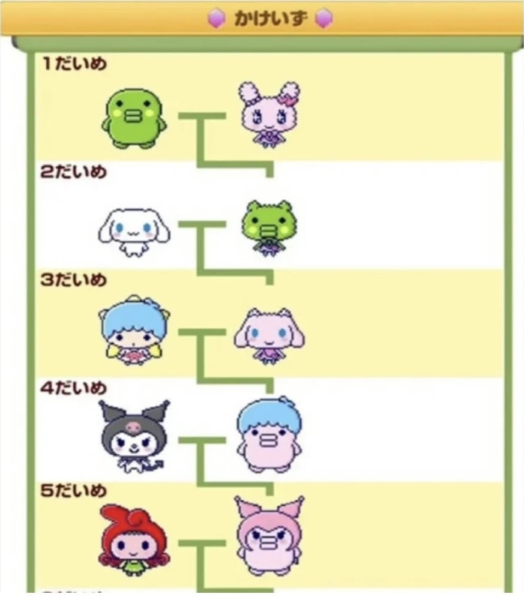

당신은 하루아침에 다마고치를 키우는 사람이 되었다. 과제를 하는것만으로도 여유 시간이 없었던 당신은 잠시 혼란에 빠진다. 당신은 잠시 무엇을 하고있었는지
잊어버린 햄스터처럼30초간 몽총한 얼굴로 가만히 있다가당신이 멈춰있는 30초간
일어나는 일들
문득 그사람이 당신의 손에 쥐어준 문건을 내려다보았다.
당신의 손에는 다마고치와 무언가를 기록하고 볼 수 있는 전자기기가 있었다. 30초간 손에 무언가 들려있다는
것을 모르기엔 꽤 무거웠지만 그럼에도 눈치채지 못했던 당신은 자신의 상황에 대해 다시금 실감한다.
당신은 손에 있는 전자기기의 전원을 켜보았다.
킹받게도 그 사람의 낯짝이 배경화면으로 되어 있었다.
화가 난 당신은 전자기기-줄여서 자기-를 깨부시고 싶었지만, 애인이 없었던 터라 자기를 차마 깨부시지는 못하였다.
당신은 자기와 함께 다마고치를 잘 키워보자고 마음을 다잡고 다시 자기를 살펴본다. 가장 먼저 눈에 띈 것은 다마고치를 키우는 법이었다.
<다마고치 키우는 법!>
다마고치는 주인의 애정으로 키우는것이 매우 중요해! 물론 모든 생명체가 다 그렇긴 하지만 다마고치는 특히! 자주 관심을 주어야 해. 우리의 작고 귀여운
다마고치들은 조금만 관심을 주지 않아도 금방 시름시름 앓다가 죽어버린다구! 그러니까 한시간에 한번씩을 꼭 다마고치의 상태를 체크해 주어야 해.
무엇을 체크해야 하는지는 아래에 있어. 하루에 한번 직접 체크해 가면서 빠트린 건 없는지 잘 확인하도록 해!
배고픈지 확인
피로도 확인
배변활동 확인
심심한지 확인
애정도 확인
기본적으로 이정도는 꼭 해줘야해!
다음으로 다마고치의 성장과정에 대해 이야기 해줄게.
<다마고치의 성장과정>
다마고치는 일반적으로 부화(알 모양)-유아기-사춘기-프렌드기(최종 성장) 순으로 성장과정을 거쳐.
유아기, 반항기, 사춘기, 1세대의 프렌드기는 정해진 캐릭터가 있으며, 케어 미스나 음식, 아이템 등의 영향을 받아 적용돼.
조상님이 없는 1세대만이 순수한? 다마고치로 태어나!(1세대 프렌드가 그만큼 중요하다는거지~)
1세대 이후에도 동일한 성장과정을 거치지만, 엄마 아빠의 유전 조합이 적용된 모습으로 표현돼.
성장에 걸리는 시간은 유아기1-2시간, 그 외에는 각 단계마다 약 24시간 정도가 소요돼.
<남아 성장차트>
유아기(0세)
반항기(1세)
사춘기(2세)
프렌드기(3세)
시즈쿠치
호시퐁치
모쿠모쿠치
한분코치
펭리보치
테루케로치
쿠루뽀요치
멧토치
모코후리치
마메치
쿠로마메치
구치파치(일명 시금치)
키키치
고자루치(특:케어미스 7이상이 되어야 나온다. 어지간히 못키웠으면...)
마메치 : 케어미스0~1번 또는 VR 5번 이상 플레이 (마이타운으로 외출-> 백화점-> 쇼핑에서 구매)
쿠로마메치 : 케어미스 2~3번 또는 오므라이스 3번 이상 먹기 (밥/간식->레스토랑->밥)
구치파치(쿠치팟치) : 케어미스 4~5번 또는 비빔국수 5번 이상 먹기 (밥/간식-> 에스토랑->밥)
키키치 : 케어미스 6번 이상 또는 킥보드 10번 이상 플레이 (마이타운으로 외출-> 백화점-> 쇼핑에서 구매)
고자루치 : 케어미스 7번 이상
<여아 성장차트>
유아기(0세)
반항기(1세)
사춘기(2세)
프렌드기(3세)
마루피치
치로리치
피스치
한분코치
펭리보치
테루케로치
쿠루뽀요치
멧토치
모코후리치
러브리치
메메치
니지후왓치
폼폼치(퐁퐁치)
와타와타치
러브리치 : 케어미스 0~1번 또는 팬케이크 3번 이상 먹기 (밥/간식-> 레스토랑-> 간식)
메메치 : 케어미스 2~3번 또는 도넛 3번 이상 먹기 (밥/간식->레스토랑->간식)
니지후왓치 : 케어미스 4~5번 또는 슈크림 5번 이상 먹기 (밥/간식-> 레스토랑->간식)
폼폼치(퐁퐁치) : 케어미스 6번 이상 또는 레몬파이 5번 이상 먹기 (밥/간식-> 레스토랑-> 간식)
어때 괸장히 쉽지? 하지만 방심은 금물이야! 앞서 말했듯이 "성실함" 매우 중요하다구! 아 참! 그리고 앞으로 너가 키우게 될 다마고치의 이름을 정해줘.
너가 직접 지어준 이름으로 부르다보면 더 빨리 정이 들거야.
!주의 사항!
이 게임엔 'Mix'라는 룰이 있어. Mix는 다마고치끼리 서로 결혼해서 아빠, 엄마의 특징을 닮은 아이가 태어나는 것을 말해. 아이는 커가면서 부모님을 닮아가게 돼.
그리고 그렇게 자란 아이를 다른 아이와 결혼을 시켜서 새로운 유전자를 만드는게 이 게임의 묘미야!
특히 시금치 유전자는 아주 강력하니까...마음에 들지 않는다면 리세마라 하는것을 추천해...
프로포즈 하는 방법은 이걸 보면 돼!
자 이만하면 기본적인 설명은 끝났어! 이제 다마고치 화면을 키고 들어가보자!
다마고치 화면을 키자 꽤나 앙증맞은 bgm이 흘러나온다.
이윽고 당신의 첫번째 다마고치가 태어난다.
??? : 당신의 다마고치는.....! 바로.......! 가면을 벗고.....! 정체를 공개해주세요!!!!(아래로 스크롤)
정체는 바로...!!! 시금치 유전자였습니다!!!

당신은 개같은 "확률조작 똥겜"을 저주하며 다마고치를 차가운 한강물에 던져버린다.
-끝-
느낀점
제가 직접 넣고싶은 것을 넣고 홈페이지를 구성하는 것이 재미있었습니다. 코딩을 이렇게 재밌게 한 적도 처음(전에 했던건 유니티밖에 없었는데 유니티는 에러로 너무 힘들었습니다.)이었습니다. 그리고 막히는 점이
생기고 그걸 풀어나가는 과정이 지루하고 힘들게 느껴지지 않았고, 퍼즐을 풀어나가는 듯한 느낌이 들었습니다. 그리고 워낙 게임을 좋아해서 홈페이지에 게임적인 요소를 넣는 것도 즐거웠습니다. 다음에도 이런 재
미있는 홈페이지를 만들어보고 싶습니다.